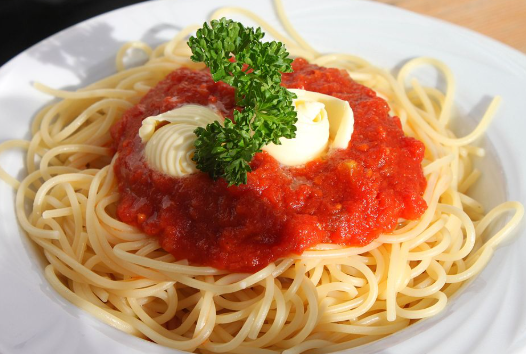

pasta al pomodoro

istruzioni
ingredienti
- 200g di pasta
- 400g di pomodori pelati
- 2 spicchi d'aglio
- 3 cucchiai di olio d'oliva
- Foglie di basilico
- Sale e pepe q.b.
preparazione
Scaldare l'olio in una padella e aggiungere l'aglio tritato.
Aggiungere i pomodori pelati e cuocere per circa 15 minuti.
Cuocere la pasta in acqua salata.
Unire la pasta alla salsa di pomodoro.
Aggiungere basilico fresco e servire.